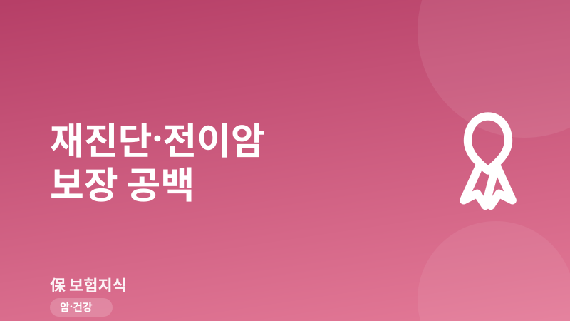
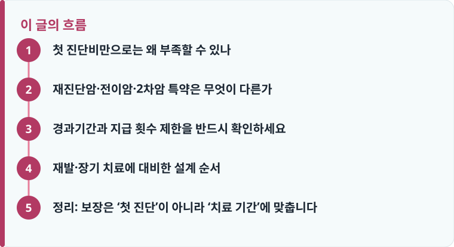

첫 진단비는 최초 1회로 끝나지만, 재진단암·전이암·2차암 특약은 재발·전이·새로운 암에 대해 다시 목돈을 지급하도록 설계된 별도 담보입니다.
재진단암 특약은 보통 첫 진단 후 1~2년의 경과기간이 지나야 지급되고, 지급 횟수도 1~2회 등으로 제한되는 경우가 많습니다.
‘재진단’과 ‘재발’, ‘전이’, ‘2차 원발암’은 약관상 정의가 다릅니다. 지급 사유를 명확히 확인하지 않으면 기대와 다른 결과가 나올 수 있습니다.
첫 진단비만으로는 왜 부족할 수 있나
대부분의 암보험은 ‘암 진단 확정’ 시점에 목돈을 한 번 지급하는 첫 진단비를 중심으로 설계됩니다. 문제는 이 첫 진단비가 원칙적으로 최초 1회 지급으로 끝난다는 점입니다. 그런데 실제 암 치료는 진단 직후 몇 달로 마무리되지 않습니다. 수술 후에도 항암·방사선 치료가 이어지고, 몇 년 뒤 같은 부위에 재발하거나 다른 장기로 전이되는 사례가 적지 않습니다. 이때는 첫 진단비를 이미 받았기 때문에 같은 담보로는 추가 보험금을 기대하기 어렵습니다.
즉 첫 진단비는 ‘진단 초기의 충격’을 완화하는 자금이지, ‘장기 재발 리스크’까지 책임지는 담보가 아닙니다. 항암치료가 2~3년 이상 이어지거나, 관해 판정 후 다시 암이 확인되는 상황에서는 소득 공백과 비급여 치료비가 다시 발생합니다. 표적항암제나 면역항암제처럼 비급여 비중이 큰 치료를 받게 되면 한 달에 수백만 원대 비용이 반복적으로 나가는 경우도 있어, 이미 첫 진단비를 소진한 뒤라면 부담이 온전히 가계로 넘어옵니다. 이 공백을 메우기 위해 등장한 것이 재진단암·전이암·2차암 관련 특약입니다. 암보험 담보 구조 자체가 익숙하지 않다면 암보험 기본 구조부터 확인한 뒤 이 글을 읽으면 이해가 훨씬 쉽습니다.
재진단암·전이암·2차암 특약은 무엇이 다른가
이름이 비슷해 보이지만 약관에서 정의하는 지급 사유는 서로 다릅니다. ‘재진단암 특약’은 첫 암 진단 이후 일정 기간이 지난 뒤 암이 다시 진단되면 진단비를 한 번 더 지급하는 담보입니다. 여기서 ‘다시 진단’에는 같은 부위의 재발, 다른 장기로의 전이, 그리고 이전 암과 무관한 새로운 원발암이 포함되는 경우가 많지만, 상품에 따라 포함 범위가 다릅니다.
‘전이암’은 최초 암이 림프절이나 다른 장기로 퍼진 상태를 별도로 보장하는 개념이고, ‘2차암(제2의 암)’은 첫 번째 암과는 원발 부위가 다른 새로운 암을 뜻합니다. 예를 들어 위암 치료 후 몇 년 뒤 대장에 새로 생긴 암은 2차 원발암으로 볼 수 있고, 위암이 간으로 번진 것은 전이로 봅니다. 이처럼 같은 ‘또 다른 암’이라도 약관 정의에 따라 어떤 특약에서 지급되는지가 갈립니다. 이런 용어 차이는 보장·면책·감액기간 개념과 함께 이해하면 훨씬 명확해집니다.
핵심은 첫 진단비와 이들 특약이 ‘서로 다른 지갑’이라는 점입니다. 첫 진단비를 받았더라도 재진단암 특약 조건을 충족하면 별도로 다시 지급받을 수 있습니다. 반대로 특약을 넣지 않았다면, 재발·전이 상황에서 진단비 성격의 목돈은 사실상 추가로 나오지 않습니다.
작성·검수 기준
이 글은 특정 보험사 상품을 권유하기 위한 것이 아니라, 암 재발·전이에 대비하는 재진단암·전이암·2차암 특약의 일반적인 지급 구조를 설명하기 위해 작성했습니다. 특약의 명칭, 경과기간, 지급 횟수, 재진단 인정 범위는 가입 시점의 약관과 개별 상품에 따라 크게 달라질 수 있습니다.
정확한 보장 범위와 지급 조건은 본인 증권의 약관과 상품설명서, 그리고 암보험 비교 기준을 함께 확인하는 것이 가장 정확합니다.

경과기간과 지급 횟수 제한을 반드시 확인하세요
재진단암 특약에서 가장 먼저 봐야 할 조건은 ‘경과기간(대기기간)’입니다. 대부분의 상품은 첫 암 진단 확정일로부터 보통 1년, 길게는 2년이 지난 뒤에 다시 진단된 암에 대해서만 재진단 보험금을 지급합니다. 이 기간 안에 발견된 재발·전이는 최초 암 치료의 연장으로 보아 지급 대상에서 제외하는 구조입니다. 따라서 첫 진단 후 6개월이나 1년 이내에 재발하면, 경과기간 요건을 채우지 못해 재진단비를 받지 못할 수 있습니다.
두 번째는 ‘지급 횟수 제한’입니다. 재진단암 특약은 무제한이 아니라 계약 기간 중 1회 또는 2회 등으로 지급 횟수가 정해진 경우가 많고, 지급 사이에도 다시 일정 경과기간(예: 직전 재진단 후 1~2년)을 두는 상품이 있습니다. 예를 들어 재진단비를 한 번 받은 뒤 곧바로 다른 부위에 암이 확인되더라도, 직전 지급일로부터 정해진 기간이 지나지 않았다면 다시 지급되지 않을 수 있습니다. 또한 첫 암과 마찬가지로 재진단암 특약에도 가입 초기 90일 면책이나 초기 감액(예: 1년 이내 50% 지급)이 적용될 수 있으므로, 가입 시점과 실제 보장 시점을 함께 따져야 합니다. 이런 조건은 청구 단계에서 분쟁으로 이어지기 쉬우니, 실제 절차는 보험금 청구 방법을 통해 미리 확인해 두는 것이 좋습니다.
재발·장기 치료에 대비한 설계 순서
재진단·전이 보장을 검토할 때는 특약을 무조건 다 넣기보다, 우선순위를 정해 보험료 대비 효과가 큰 순서로 설계하는 것이 현실적입니다. 다음 순서로 점검해 보세요.
- 먼저 첫 진단비(일반암 기준)가 소득 공백과 초기 치료비를 감당할 수준인지 확인합니다.
- 재진단암 특약의 경과기간(보통 1~2년)과 재진단 인정 범위(재발·전이·2차암 포함 여부)를 확인합니다.
- 지급 횟수 제한과 지급 간 재대기기간, 초기 면책·감액 조건을 함께 봅니다.
- 전이암·2차암이 별도 특약인지, 재진단 담보에 포함되는지 약관 정의로 구분합니다.
- 보험료 부담과 갱신 주기를 비교해, 첫 진단비 증액과 재진단 특약 추가 중 우선순위를 정합니다.
정리: 보장은 ‘첫 진단’이 아니라 ‘치료 기간’에 맞춥니다
암 보장은 진단받는 순간이 아니라, 그 뒤로 이어지는 몇 년의 치료·재발 기간 전체를 기준으로 설계해야 합니다. 첫 진단비만으로는 관해 이후의 재발과 전이, 새로 생긴 2차암까지 대비하기 어렵습니다. 재진단암·전이암·2차암 특약의 경과기간과 지급 횟수, 인정 범위를 확인해 두면, 장기 치료 국면에서 ‘보장이 끝나 버렸다’는 상황을 줄일 수 있습니다.
다른 보험 정보 글이 궁금하다면 보험지식 블로그에서 이어 읽어 보세요. 가입 전에는 반드시 약관과 상품설명서를 확인하는 것이 가장 안전한 방법입니다.